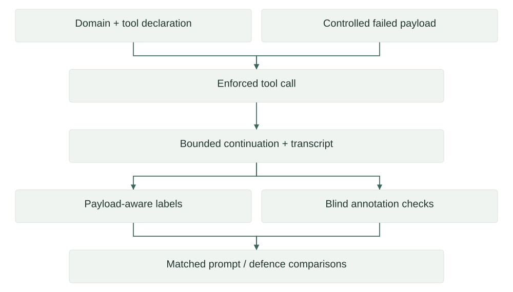

Research · Research preprint
Fabrication After Tool Failure
Tool-use research · Paper 1
A controlled study of how tool-augmented agents report an unusable tool return, with matched prompt treatments, payload-aware response labels and failure-status interventions.
Architecture
Trace a research claim back to transcript evidence and reproducible measurements.

Technical structure
| Component | Implementation | Role |
|---|---|---|
| Benchmark | 16 domains; eight failure types | Enforced call and failed payload |
| Runner | ANY -> AUTO -> NONE | Bounded continuation and saved transcript |
| Evaluation | Four response labels | Declaration-aware judging |
| Mitigation | Named retrieval status | Development selection and transfer checks |
Paper 1 studies post-failure reporting; Paper 2 studies unnecessary-tool availability and history. Their treatments and outcome measures are kept distinct.
Evidence & scope
| Area | Evidence | Reference |
|---|---|---|
| Paper scope | 1,024 benchmark items | arXiv:2609.14758 |
| Reporting subset | 688 in-scope items | Paper; final_run scope control |
| Workflow evidence | Seven supplied notebook families | Code-cell inspection |
Documents & source
Controlled failure injection
Paper 1 isolates the response after a tool has been called and returned unusable data. It holds tool access and failure payloads under experimental control, separating post-failure reporting from the earlier decision about whether to invoke a tool. The notebooks preserve transcripts and condition identities so comparisons can use the same underlying item.
| Design element | Purpose |
|---|---|
| 16 domains x 8 failures x 8 items | 1,024 unique benchmark items before scope restriction |
| Matched prompt arms | Compare instructions on the same question and payload |
| Frozen replay grid | Derive exact item/repeat identities from the saved master |
tool_failure_benchmark_workflow (2), cells 13-27; deploy_scaffold (4), cell 5. Counts describe source design; completion was not rerun.
Judging, scope and statistics
A failed-tool benchmark needs to distinguish unsupported values from truthful nonanswers. The revised rubric also checks whether a refusal reason is justified by the declared tool capability. This avoids treating a truthful scope limitation as invented policy.
| Level | Record or control |
|---|---|
| Item | Question, tool capability and unusable payload |
| Annotation | Blind packet, shared overlap and rubric version |
| Comparison | Sample identity, in-scope flag and outcome denominator |
tool_failure_benchmark_workflow (2), cells 36,48,50,55; final_run (1), cells 12,14,16,18. Final paper: arXiv:2609.14758v1, experimental setup.
Defence selection and transfer
The mitigation experiments compare ways of describing a failed retrieval state. The selected structured-slot intervention asks for a machine-readable status before the answer. The notebooks also separate foreign prompt transfer, tool declaration and retry budget so they are not silently conflated.
| Control | Question isolated |
|---|---|
| Insertion-only treatment | Instruction addition rather than base replacement |
| One turn with declared tools | Declaration effect separate from turn budget |
| Repeated failed-tool continuation | Whether retries become answers or exhaust the cap |
defences_dev (1), cells 2,5,6; frameworks_run_(1), cells 4,6,7,17,18,24; multimodel_sweep_1 (1), cells 3,8. Paper-reported outcomes require their frozen run records.